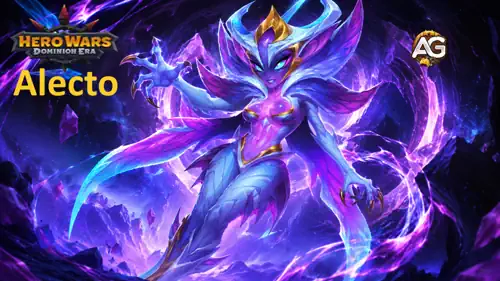
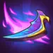

Alecto-Guide für Hero Wars: Dominion Era
- Von: Alexandre Domingos. .
Alecto kann etwas, das die meisten Schützen nicht können: Sie verschwindet aus der Gefahrenzone, dringt in die gegnerische Hinterreihe ein und entfesselt fünf Treffer, während sie vollständig unverwundbar bleibt. Diese Kombination macht sie sofort zu einer der spannendsten neuen taktischen Einheiten in Hero Wars: Dominion Era.
Ihr Schaden ist leicht zu verstehen, aber schwer abzuwehren. Die eigentliche Herausforderung besteht darin, genügend Physischen Angriff aufzubauen, damit jeder Treffer zählt, sie zwischen den Einsätzen zu schützen und Teammitglieder auszuwählen, die ihren Druck auf die Hinterreihe in einen vollständigen Sieg verwandeln.


📋 Inhaltsverzeichnis des Alecto-Guides
Wer ist Alecto?
Alecto ist eine Schützin der Verzerrung, die während des Events Fall des Schleiers im August 2026 eingeführt wurde. Sie kämpft auf Schlachtfeldposition 6 und ist darauf ausgelegt, den am weitesten entfernten Gegner zu bestrafen, anstatt die gesamte Schlacht auf den gegnerischen Tank zu schießen.

- Rolle: Schützin
- Element: Verzerrung
- Schlachtfeldposition: #6
- Basisangriff: 1.144.764 Physischer Schaden alle 4 Sekunden
- Erhalt: Kreis der Beschwörung; zum Veröffentlichungszeitpunkt noch nicht hinzugefügt
- Beste Synergie: Valdur, Verzerrungskerne und Teams, die sie zwischen den Einsätzen von Phasenbruch schützen
Was Alecto besonders macht, ist ihre Zielauswahl. Phasenbruch bewegt sie hinter den am weitesten entfernten Gegner, sodass eine verwundbare Unterstützungseinheit oder ein Fernkampfschadensverursacher plötzlich zum Mittelpunkt des Kampfes werden kann. Während der Sequenz aus fünf Treffern ist sie unverwundbar und kehrt anschließend an ihre ursprüngliche Position zurück. Dieser Schutz ist mächtig, hält aber nur an, solange die Fähigkeit aktiv ist.
Ein neuer Elementarzyklus: Wie Verzerrung Titanenkämpfe verändert
Verzerrung erweitert das vertraute elementare Gleichgewicht, anstatt dem ursprünglichen Dreieck aus Erde, Wasser und Feuer beizutreten. Verzerrungs-Titanen haben einen Elementarvorteil gegenüber Licht- und Dunkelheits-Titanen, während Feuer-, Wasser- und Erd-Titanen die natürlichen Konter gegen Verzerrung sind.
| Duell | Ergebnis für Alecto | Strategische Bedeutung |
|---|---|---|
| Verzerrung gegen Licht | Vorteil | Alecto ist eine starke offensive Option, um Licht-Titanen in der Hinterreihe zu erreichen und auszuschalten. |
| Verzerrung gegen Dunkelheit | Vorteil | Ihr Explosionsschaden erhält gegen Dunkelheits-Teams eine günstige elementare Ausgangslage. |
| Verzerrung gegen Feuer | Nachteil | Feuer-Titanen sind natürliche Konter und können Alecto zwischen den Einsätzen von Phasenbruch bestrafen. |
| Verzerrung gegen Wasser | Nachteil | Wasser verbindet seinen natürlichen Vorteil mit Heilung, Angriffsreduktion, Kontrolle oder Unverwundbarkeit. |
| Verzerrung gegen Erde | Nachteil | Der natürliche Vorteil der Erde macht ihre widerstandsfähige Frontlinie und ihren Flächenschaden für Alecto gefährlicher. |
Dieser Zyklus ist entscheidend, wenn man Alectos Schadenswerte betrachtet. Phasenbruch bleibt in jedem Duell mächtig, aber ihre günstigsten Ziele sind Licht und Dunkelheit. Gegen Feuer, Wasser oder Erde benötigt sie stärkeren Schutz, besseres Timing oder ein gemischtes Team, das ihre elementare Schwäche ausgleicht.
Alectos Vor- und Nachteile - Hero Wars: Web & Facebook
✅ Vorteile
- Besitzt einen natürlichen Elementarvorteil gegenüber Licht- und Dunkelheits-Titanen.
- Greift den am weitesten entfernten Gegner direkt an und umgeht damit das übliche Muster, zuerst die Frontlinie anzugreifen.
- Wird während der gesamten fünf Treffer von Phasenbruch unverwundbar.
- Verursacht starken Einzelzielschaden und fügt zugleich Gegnern in der Nähe Schaden zu.
- Skaliert eindeutig mit Physischem Angriff, wodurch sich Ausbauentscheidungen leicht bewerten lassen.
- Hat bereits Siege in einer Verzerrungsverteidigung und einer gemischten Feuerkomposition erzielt.
❌ Nachteile
- Feuer-, Wasser- und Erd-Titanen sind allesamt natürliche elementare Konter gegen Verzerrung.
- Bietet weder Betäubung noch Stille, Schild, Heilung oder Teamschutz.
- Ihr Basisangriffsintervall von vier Sekunden ist langsam, sodass verzögerte Energie ihren wichtigsten Explosionsschaden aufschieben kann.
- Die Unverwundbarkeit endet zusammen mit Phasenbruch und hinterlässt zwischen den Einsätzen ein bestrafbares Zeitfenster.
- Ihre Krone ist defensiv und vom Duell abhängig, während ihre Rolle hohe offensive Investitionen verlangt.
- Als neuer Titan könnten ihre einzigartigen Seelensteine und Artefaktfragmente außerhalb spezieller Events weiterhin knapp bleiben.
Alectos maximale Werte und Ausbaukosten
Dies sind die angegebenen Maximalwerte von Alecto. Sie sind nützlich, um ihre Überlebensfähigkeit und ihr Explosionsschadenspotenzial mit anderen vollständig ausgebauten Titanen zu vergleichen.
| Wert | Maximalwert |
|---|---|
| Gesundheit | 10.236.956 |
| Kraft | 234.281 |
| Physischer Angriff | 1.144.764 |
| Elementarangriff | 709.635 |
| Elementarrüstung | 175.467 |
Alecto über sämtliche Stufen und Evolutionsränge auszubauen, erfordert 1.009.660 Titanentränke, 201.932 Smaragde und 3.130 Alecto-Seelensteine. Ihr Stufenanteil liefert 4.631.962 Gesundheit, 586.962 Physischen Angriff und 63.536 Kraft.
Alectos Fähigkeiten-Guide - Hero Wars: Dominion Era
Phasenbruch kombiniert Zugriff auf die Hinterreihe, Explosionsschaden mit fünf Treffern, Flächendruck und vorübergehende Unverwundbarkeit. Wer das Timing versteht, erkennt Alectos wahren Wert.
Fähigkeit 1: Phasenbruch
Beschreibung im Spiel: Alecto bewegt sich hinter den am weitesten entfernten Gegner und trifft ihn fünfmal. Solange die Fähigkeit aktiv ist, ist sie unverwundbar. Jeder Treffer fügt auch Gegnern in der Nähe Schaden zu, und wenn die Sequenz endet, kehrt Alecto an ihre ursprüngliche Position zurück.
Erklärung der Fähigkeit: Betrachte Phasenbruch als einen geschützten Überfall auf die Hinterreihe. Alecto bleibt nicht dauerhaft hinter dem Gegner: Sie erscheint dort, führt alle fünf Treffer aus, ohne Schaden zu erleiden, und kehrt dann zurück. Das Hauptziel erleidet 686.858 Physischen Schaden pro Treffer, während Gegner in der Nähe 343.429 Physischen Schaden pro Treffer erleiden.
Formel für jeden Treffer auf das Hauptziel: (60 % des Physischen Angriffs). Formel für jeden Treffer auf Gegner in der Nähe: (30 % des Physischen Angriffs).
Über alle fünf Treffer hinweg ergeben die angegebenen Werte insgesamt 3.434.290 Schaden am Hauptziel und bis zu 1.717.145 Schaden an jedem Gegner in der Nähe, bevor die Verteidigungswerte des Gegners und andere Kampfmodifikatoren berücksichtigt werden.
Bedeutung im PvP: Der am weitesten entfernte Gegner ist häufig eine Unterstützungseinheit oder ein Schütze, der erwartet, von der Frontlinie geschützt zu werden. Alecto zwingt diese Einheit, direkten Explosionsschaden zu absorbieren. Ihre Unverwundbarkeit kann außerdem dafür sorgen, dass gegnerische Angriffe ihr vorgesehenes Schadensfenster verfehlen, doch nach ihrer Rückkehr können Gegner sie weiterhin bestrafen.
Bedeutung im Dungeon: Phasenbruch ist wertvoll, um einen gefährlichen Gegner in der Hinterreihe auszuschalten und Schaden in Räumen mit dicht gruppierten Gegnern zu verteilen. Da das Überleben im Dungeon strategisch wichtig ist, darf vorübergehende Unverwundbarkeit nicht mit dauerhafter Durchhaltefähigkeit verwechselt werden: Alecto profitiert zwischen den Einsätzen weiterhin von Heilung, Schilden und Angriffsreduktion.


Elementargeist der Verzerrung
Alectos viertes Titanenartefakt ist der Elementargeist der Verzerrung. Bei maximalem Ausbau gewährt er +299.673 Physischen Angriff pro Titan und 20.377 Kraft pro Titan, wodurch beide Formeln von Phasenbruch direkt verstärkt werden.
Hinweis zur Genauigkeit: Die bereitgestellten Alecto-Daten bestätigen dieses Artefakt und seine Werte, enthalten jedoch keine separate Beschreibung einer aktiven Kampffähigkeit des Verzerrungstotems. Deshalb erfindet dieser Guide weder eine unbestätigte Totem-Fähigkeit noch eine Aktivierungsregel.

Bester Skin für Titanin Alecto - Hero Wars: Dominion Era
Alecto besitzt zwei Skins, deren Boni sich addieren. Physischer Angriff verbessert beide Formeln von Phasenbruch direkt, während Elementarschaden ihre offensiven Möglichkeiten in verschiedenen Duellen stärkt.
Standard-Skin
Physischer Angriff: +76.740
Kraft: +5.218
Kosten für den maximalen Ausbau: 354.960 Titanen-Skinsteine
PvP-Entwicklungspriorität: Sehr hoch — 1. Platz — Jeder Punkt Physischen Angriffs verbessert die 60-%-Formel des Haupttreffers und die 30-%-Formel des Flächenschadens. Über fünf Treffer hinweg wirkt sich diese Verbesserung wiederholt aus.
Dungeon-Entwicklungspriorität: Sehr hoch — 1. Platz — Verbessert Basisangriffe und Phasenbruch beständig, ohne von einem bestimmten gegnerischen Element abhängig zu sein.
Primordial-Skin
Elementarschaden: +230.160
Kraft: +15.650
Kosten für den maximalen Ausbau: 364.585 Titanen-Skinsteine
PvP-Entwicklungspriorität: Hoch — 2. Platz — Dieser große Offensivbonus verstärkt Alectos günstige Verzerrungsduelle gegen Licht und Dunkelheit. Der Standard-Skin bleibt an erster Stelle, weil Physischer Angriff beide Formeln von Phasenbruch direkt und universell skaliert.
Dungeon-Entwicklungspriorität: Hoch — 2. Platz — Wertvoll für schadensorientierte gemischte Räume, besonders wenn Licht- oder Dunkelheits-Titanen anwesend sind; der Standard-Skin bleibt dennoch die eindeutigere erste Investition.
Verfügbarkeit: exklusiv ab dem 24. August 2026 und ab dem 24. Dezember 2026 öffentlich verfügbar.
Wichtig: Die Wahl des sichtbaren Skins ist rein kosmetisch. Sobald beide Skins freigeschaltet und ausgebaut sind, addieren sich ihre Boni unabhängig von Alectos ausgewähltem Aussehen.
Priorität der Artefaktentwicklung für Alecto - Hero Wars: Dominion Era
Die Artefakte bleiben unten in derselben visuellen Reihenfolge wie im Spiel. Ihre Prioritätsangaben berücksichtigen Alectos Skalierung des Physischen Angriffs über fünf Treffer und ihre Notwendigkeit, zwischen den ultimativen Fähigkeiten zu überleben.

Zorvals Flügel - Waffenartefakt
Elementarschaden: +479.475
Kraft: +32.604
Maximale Kosten: 686.080 Essenzen der Elemente, 68.608 Smaragde und 18.400 Fragmente von Zorvals Flügel.
PvP-Entwicklungspriorität: Hoch — 2. Platz — Eine große offensive Steigerung, die Alecto besonders für Licht und Dunkelheit bedrohlich macht, also die beiden Elemente, die Verzerrung auf natürliche Weise kontert. Das Siegel bleibt an erster Stelle, weil seine Gesundheit und sein Physischer Angriff in jedem Duell helfen, auch in ungünstigen.
Dungeon-Entwicklungspriorität: Sehr hoch — 1. oder 2. Platz — Angriffsteams im Dungeon profitieren von schnelleren Eliminierungen, und der Elementarschaden ist besonders in gemischten Räumen mit Licht- oder Dunkelheitsgegnern nützlich.

Krone der Verzerrung - Verteidigungsartefakt
Elementarrüstung: +175.467
Kraft: +55.973
Maximale Kosten: 686.080 Essenzen der Elemente, 68.608 Smaragde und 18.400 Fragmente der Krone der Verzerrung.
PvP-Entwicklungspriorität: Mittel bis hoch — 3. Platz — Die Rüstung hilft Alecto, nach ihrer Rückkehr zu überleben, doch der neue Zyklus verdeutlicht die Einschränkung: Feuer, Wasser und Erde bleiben ihre natürlichen Konter, sodass die Krone angemessenen Schutz und eine sorgfältige Duellplanung nicht ersetzen kann.
Dungeon-Entwicklungspriorität: Niedrig — 3. Platz — Nützlich, wenn das Überleben der Engpass ist, besonders in ungünstigen Elementarräumen; offensive Artefakte verbessern den reinen Angriffsfortschritt normalerweise jedoch schneller.
Siegel des verzerrten Angriffs
Gesundheit: +5.593.676
Physischer Angriff: +179.805
Kraft: +40.754
Maximale Kosten: 173.005.000 Gold, 68.608 Smaragde und 18.400 Fragmente des Siegels des verzerrten Angriffs.
PvP-Entwicklungspriorität: Sehr hoch — 1. Platz — Es bietet das beste Paket aus zwei Werten für Alecto: Physischer Angriff skaliert alle fünf Treffer direkt, und der enorme Gesundheitsbonus hält sie bis zum nächsten Einsatz am Leben.
Dungeon-Entwicklungspriorität: Sehr hoch — 1. oder 2. Platz — Schaden in Verbindung mit universeller Gesundheit macht es in gemischten Räumen und längeren Sequenzen zuverlässig.
Alexandres empfohlene Reihenfolge: Für die meisten PvP-Konten zuerst das Siegel des verzerrten Angriffs, danach Zorvals Flügel und an dritter Stelle die Krone der Verzerrung. Bei einem durch Schaden begrenzten Dungeon-Fortschritt können Zorvals Flügel und das Siegel den ersten Platz tauschen.
Beste elementare Totem-Fusionsfähigkeiten für Alecto
Die sechs neueren Fusionsfähigkeiten verändern Alectos Rangliste vollständig. Permanente Angriffsskalierung und das Gruppieren von Gegnern bieten jetzt mehr Wert als die ursprünglichen, auf Überleben ausgerichteten Optionen.
Wie funktioniert die Totem-Fusion?
Wähle im Fusionsfenster Elementar oder Primordial, entscheide dich für die gewünschte Fähigkeit und lege fest, wie viele Katalysatoren du investieren möchtest. Mehr Katalysatoren erhöhen die angezeigte Chance, diese Fähigkeit und einen besseren Rang zu erhalten. Wenn das Totem die ausgewählte Fähigkeit bereits besitzt, steigt die Chance, sie erneut und auf einer höheren Stufe zu erhalten. Wenn zwei Totems dieselbe Fähigkeit tragen, wird nur die höherstufige Version aktiviert.
Elementarfähigkeiten werden normalerweise global und ohne Abklingzeit ausgelöst, sofern ihre Beschreibung nichts anderes angibt. Die Fusion verbraucht die Katalysatoren, sobald sie beginnt. Du kannst ein unerwünschtes Ergebnis ablehnen und den vorherigen Zustand des Totems wiederherstellen, doch die verbrauchten Katalysatoren werden nicht zurückgegeben. Das Haupttotem ist bereits im Kampf vorhanden und wird deshalb nicht als Fusionsfähigkeit eingestuft.

1. Platz - Hauptreihe
Effekt im Spiel: Alle fünf Sekunden erhöht Hauptreihe den Angriff aller verbündeten Titanen bis zum Ende der Schlacht. Bei den angegebenen Werten gewährt jede Aktivierung +146.250 Angriff, abhängig von der Kraft des Totems.
Warum sie jetzt Alectos beste Elementarfusion ist: Phasenbruch berechnet jeden Treffer auf das Hauptziel mit (60 % des Physischen Angriffs) und jeden Treffer auf Gegner in der Nähe mit (30 % des Physischen Angriffs). Eine einzelne Steigerung um +146.250 Angriff fügt daher jedem Haupttreffer 87.750 und jedem Flächentreffer 43.875 hinzu. Über alle fünf Treffer hinweg sind das bis zu +438.750 Schaden am Hauptziel und +219.375 Schaden an jedem Gegner in der Nähe, bevor Verteidigungswerte und andere Modifikatoren berücksichtigt werden.
Der Effekt verstärkt außerdem Alectos Basisangriffe und gewinnt in einem langen Kampf immer weiter an Wert. Er ist universell, erfordert weder Betäubung, Schild, Tod noch die Aktivierung des gegnerischen Totems und funktioniert im PvP-Angriff, in der PvP-Verteidigung und in Dungeon-Räumen.

2. Platz - Gravitationsanomalie
Effekt im Spiel: Beschwört eine Anomalie im Zentrum des gegnerischen Teams, zieht Gegner nach innen und fügt ihnen fünf Sekunden lang Schaden zu. Im Epizentrum ist der Schaden am höchsten und erreicht bei der angegebenen Totem-Kraft und dem angegebenen Fähigkeitsrang 1.669.078.
Warum sie zu Alecto passt: Phasenbruch fügt Gegnern in der Nähe von Alectos ausgewähltem Ziel die Hälfte des Schadens des Haupttreffers zu. Gravitationsanomalie drängt die gegnerische Formation zusammen und erhöht damit die Wahrscheinlichkeit, dass mehrere Gegner innerhalb dieses Flächenschadens bleiben. Sie stört außerdem die Positionierung, während Alecto während ihrer eigenen Bewegung und Angriffssequenz sicher unverwundbar ist.
Dies ist die stärkste Option, wenn Alectos Überfall auf ein Einzelziel Druck auf das gesamte Team ausüben soll. Sie ist besonders attraktiv gegen weit auseinandergezogene Formationen, die normalerweise verhindern, dass ihr Schaden an nahen Zielen mehrere Titanen erreicht.
3. Platz - Nova-Flamme
Effekt im Spiel: Erzeugt eine Nova-Flamme, die sich fünf Sekunden lang konzentriert. Für zwei Sekunden nach der Aktivierung kann die Gesundheit verbündeter Titanen nicht unter 1 fallen. Anschließend explodiert die Flamme und fügt allen Gegnern 5.449.641 Schaden zu, abhängig von der Totem-Kraft und dem Fähigkeitsrang.
Warum sie zu Alecto passt: Während Phasenbruch ist Alecto bereits unverwundbar, doch nach ihrer Rückkehr an die ursprüngliche Position ist sie ungeschützt. Nova-Flamme kann sie während dieses verwundbaren Zeitfensters erhalten und gleichzeitig die anderen vier Titanen schützen. Ihre enorme Explosion gegen das gesamte Team kann jeden Gegner schwächen, bevor Alecto für ihre nächste Sequenz aus fünf Treffern den am weitesten entfernten Überlebenden auswählt.
Sie liegt nur deshalb hinter Gravitationsanomalie, weil sich ihr Schutz mit Alectos eigener Unverwundbarkeit überschneiden kann und sie ihre Formeln nicht direkt verbessert. Für das allgemeine Überleben des Teams und rohen Flächenschaden kann Nova-Flamme in der Praxis dennoch die bessere Wahl sein.
Alle 12 elementaren Fusionsfähigkeiten für Alecto im Vergleich
| Rang | Fusionsfähigkeit | Priorität für Alecto | Begründung |
|---|---|---|---|
| 1 | Hauptreihe | Sehr hoch | Wiederholte Steigerungen um +146.250 Angriff skalieren jeden Basisangriff und beide Formeln der fünf Treffer von Phasenbruch direkt. |
| 2 | Gravitationsanomalie | Sehr hoch | Gruppiert Gegner für Alectos Schaden an nahen Zielen und verursacht im Epizentrum bis zu 1.669.078 Schaden. |
| 3 | Nova-Flamme | Sehr hoch | Verhindert zwei Sekunden lang den Tod verbündeter Titanen und fügt anschließend allen Gegnern 5.449.641 Schaden zu. |
| 4 | Traumschleier | Hoch | Nachdem das gegnerische Basistotem aktiviert wurde, erzeugt der 7,75 Sekunden lange Schlaf ein geschütztes Explosionsschadensfenster mit einer Abklingzeit von 10 Sekunden. Alectos angegebene vollständige Hauptzielsequenz überschreitet die Aufwachschwelle von 2.925.000 Schaden, während ihr angegebener gesamter Flächenschaden allein diese Schwelle nicht überschreitet. |
| 5 | Dunkle Materie | Hoch in Betäubungsteams | Jede Betäubung eines Gegners schleudert einen Kometen mit 2.437.500 Schaden herab und verursacht 21 Sekunden lang 75 % Verwundbarkeit gegenüber Elementarschaden. Hervorragend mit Moloch, doch Alecto besitzt selbst keine Betäubung. |
| 6 | Letzter Blitz | Hoch | Einmal pro Kampf hält die Fähigkeit den sterbenden Titanen fünf Sekunden lang bei 1 Gesundheit, gewährt 15 % Geschwindigkeit und 16.100 Angriff und kann einen weiteren Phasenbruch ermöglichen. |
| 7 | Sternenstaub | Mittel bis hoch | Verursacht während eines 15-sekündigen Sturms 828.750 Bewegungsschaden und stößt jede Sekunde einen zufälligen Titanen weg. Vielversprechend, doch die Wechselwirkung mit der Bewegung von Phasenbruch muss sorgfältig im Kampf getestet werden. |
| 8 | Eiszeit | Mittel bis hoch | Friert alle Gegner eine Sekunde lang ein und verursacht nach Aktivierung des gegnerischen Basistotems fünf Sekunden lang 15,8 % Zerbrechlichkeit. |
| 9 | Murmeln der Felsen | Mittel bis hoch | Eine Barriere mit 450.625 Haltbarkeit schützt das gesamte Team und reflektiert den doppelten absorbierten Schaden, verbessert Alectos Explosionsschaden jedoch nicht direkt. |
| 10 | Flüstern der Tiefen | Mittel | Verursacht über zehn Sekunden insgesamt 50.312 kombinierten Schaden und Heilung; sicher, aber deutlich schwächer als die neueren Effekte. |
| 11 | Zorn der Tiefen | Mittel | Verwandelt den Tod eines Verbündeten in 52.500 Flächenschaden und eine einsekündige Betäubung. Nützlich für Ketten mit Dunkler Materie, erfordert jedoch den Tod eines Titanen. |
| 12 | Flammentanz | Niedrig | Seine 126.875 Flächenschaden sind bedingungslos, doch seine Wirkung wird von Gravitationsanomalie und Nova-Flamme übertroffen. |
Alexandres Urteil: Wähle Hauptreihe als Alectos sicherste universelle Fusion. Verwende Gravitationsanomalie, wenn das Gruppieren der Gegner den Flächenschaden von Phasenbruch vervielfacht, und nutze Nova-Flamme, wenn das Team ein Überlebensfenster benötigt. Dunkle Materie verdient in der getesteten Aufstellung mit Moloch besondere Beachtung, weil Moloch die Betäubung liefert, die Alecto fehlt.
Beste urtümliche Totem-Fusionsfähigkeiten für Alecto
Die urtümliche Fusion sollte Alecto dabei helfen, ihre Fähigkeit häufiger einzusetzen, nach ihrer Rückkehr an die Position zu überleben oder verlorene Gesundheit in genügend Angriff umzuwandeln, um ein vorrangiges Ziel auszuschalten.

1. Platz - Urzeitlicher Eifer
Wenn der Titan seine Grundfähigkeit einsetzt, besteht bei Urzeitlicher Eifer die Chance, Energie wiederherzustellen. Auf Rang I betragen die angegebenen Werte 40 % der maximalen Energie und eine Aktivierungschance von 20 %, wobei die Skalierung von der Totem-Kraft und dem Fähigkeitsrang abhängt.
Phasenbruch bestimmt Alectos gesamte Identität im Kampf, daher ist ein weiterer Einsatz normalerweise wertvoller als ein kleiner passiver Effekt. Mehr Einsätze bedeuten mehr geschützte Zeit, höheren Druck auf die Hinterreihe und eine weitere Schadenssequenz aus fünf Treffern.

2. Platz - Puls der Ahnen
Jedes Mal, wenn ein verbündeter Titan eine Fähigkeit einsetzt, wird dieser Titan geheilt. Auf Rang I beträgt die angegebene Heilung 112.000 und kann höchstens einmal alle 21 Sekunden aktiviert werden; beide Werte hängen vom Ausbau des Totems ab.
Dies ist eine zuverlässige Durchhaltefähigkeit, die keinen Schild voraussetzt. Alecto kann nach dem Einsatz von Phasenbruch geheilt werden, was ihr hilft, das ungeschützte Zeitfenster zu überleben, bevor sie genügend Energie gesammelt hat, um erneut zu verschwinden.

3. Platz - Ruf der Elemente
Ruf der Elemente erhöht den Angriff eines Titanen proportional zu seiner fehlenden Gesundheit. Auf Rang I beträgt der angegebene Wert +2.100 Angriff für jeweils 21 % fehlender maximaler Gesundheit, wobei die Skalierung von der Totem-Kraft und dem Fähigkeitsrang abhängt.
Alecto erreicht zwischen den Einsätzen von Phasenbruch häufig einen gefährlichen Zustand mit niedriger Gesundheit. Diese Fusion verwandelt einen Teil dieser Gefahr in stärkeren Schaden durch fünf Treffer. Sie ist aggressiver als Puls der Ahnen, hält Alecto aber nicht von selbst am Leben.
So konterst du Titanin Alecto - Hero Wars: Dominion Era
Der erweiterte Elementarzyklus bietet einen klaren Ausgangspunkt: Feuer, Wasser und Erde sind allesamt natürliche Konter gegen Verzerrung. Die stärksten Antworten verbinden diesen Elementarvorteil mit Flächenschaden, Angriffsreduktion, Kontrolle oder anhaltendem Druck, der Alecto außerhalb von Phasenbruch trifft. Die folgenden Beispiele repräsentieren alle drei Konterelemente und sind alphabetisch aufgeführt.

Angus: Erde besitzt einen natürlichen Vorteil gegenüber Verzerrung. Zorn der Erde fügt außerdem dem gesamten gegnerischen Team acht Sekunden lang Schaden zu. Alecto vermeidet Schaden, solange Phasenbruch aktiv ist, doch der anhaltende Flächeneffekt kann sie treffen, nachdem sie an ihre ursprüngliche Position zurückgekehrt ist. Angus' Widerstandsfähigkeit gibt seinem Team Zeit, den Explosionsschaden der fünf Treffer zu überleben und den Druck aufrechtzuerhalten.

Araji - Feuer
Araji: Feuer kontert Verzerrung auf natürliche Weise, und Araji liefert den anhaltenden offensiven Druck, der nötig ist, um Alecto zwischen ihren unverwundbaren Sequenzen zu bestrafen. Er beendet Phasenbruch nicht, solange die Fähigkeit aktiv ist; das Ziel besteht darin, die fünf Treffer zu überleben und das ungeschützte Zeitfenster nach Alectos Rückkehr so gefährlich wie möglich zu machen.
Mairi: Wasser besitzt bereits den natürlichen Elementarvorteil, und Fluch des Abgrunds reduziert den Angriff aller Gegner acht Sekunden lang um 40 %. Da beide Formeln von Phasenbruch Alectos Physischen Angriff verwenden, schwächt ein vor der ultimativen Fähigkeit angewandter Fluch jeden Treffer auf das Hauptziel und auf Gegner in der Nähe direkt.
Beste Alecto-Teams - Hero Wars: Dominion Era
Aus den bereitgestellten Tests wurden acht einzigartige Aufstellungen zusammengeführt. Doppelte Teams erscheinen nur einmal, und ein 10:0-Ergebnis wird nur dort genannt, wo dieser Spielstand ausdrücklich gemeldet wurde. Die Ergebnisse gelten für bestimmte Duelle und garantieren nicht dieselbe Leistung bei jeder Totem-Stufe, jedem Fusionsrang oder manuellen Timing.
Team 1
Empfohlene Aufstellung; Gegner und Ergebnis wurden nicht angegeben.
Team 2
Getestet gegen: Brustar, Rigel, Mort, Solaris, Tenebris (Ergebnis nicht angegeben) · Gewann 10:0 gegen Rigel, Mort, Solaris, Iyari, Tenebris
Team 3
Getestet gegen: Brustar, Rigel, Solaris, Iyari, Tenebris (Ergebnis nicht angegeben)
Team 4
Gewann 10:0 gegen Brustar, Rigel, Solaris, Iyari, Tenebris · Gewann 10:0 gegen Rigel, Mort, Solaris, Iyari, Tenebris
Team 5
Gewann 10:0 gegen Brustar, Rigel, Solaris, Iyari, Tenebris · Gewann 10:0 gegen Rigel, Mort, Solaris, Iyari, Tenebris
Team 6
Gewann 10:0 gegen Rigel, Mort, Solaris, Iyari, Tenebris
Team 7
Gewann 10:0 gegen Rigel, Mort, Solaris, Iyari, Tenebris
Team 8
Gewann 10:0 gegen Rigel, Mort, Solaris, Iyari, Tenebris
Fazit des Alecto-Guides
Alecto ist eine gezielte Antwort auf Teams, die sich hinter einer widerstandsfähigen Frontlinie zu sicher fühlen. Phasenbruch erreicht den am weitesten entfernten Gegner, führt fünf Treffer mit erheblichem Flächenschaden aus und schützt Alecto während der Sequenz vor jeglichem Schaden. Der neue Elementarzyklus verdeutlicht ihre Rolle noch stärker: Sie wurde dafür geschaffen, Licht und Dunkelheit unter Druck zu setzen, während Feuer, Wasser und Erde sorgfältigeren Schutz und genaueres Timing erfordern.
Meine Ausbaureihenfolge ist unkompliziert: Maximiere den Standard-Skin vor dem Primordial-Skin, beginne bei den Artefakten mit dem Siegel des verzerrten Angriffs, fahre mit Zorvals Flügel fort und setze die Krone der Verzerrung an die dritte Stelle, sofern das Überleben nicht bereits dein größtes Problem ist. Mit der erweiterten Liste elementarer Fusionen ist Hauptreihe jetzt Alectos beste universelle Wahl, gefolgt von Gravitationsanomalie und Nova-Flamme. Urzeitlicher Eifer bleibt die führende urtümliche Option.
Die neuen Tests erweitern die Optionen für Valdur und Alecto auf acht unterschiedliche Aufstellungen mit Verbündeten aus Feuer, Wasser, Erde, Licht, Dunkelheit und Verzerrung. Mehrere Teams erzielten ein 10:0 gegen die aufgeführten Verteidigungen mit Rigel und Solaris, doch jedes Ergebnis gilt nur für dieses genaue Duell; Totem-Entwicklung, Fusionsfähigkeiten und Kampftiming können das Resultat weiterhin verändern.
Alexandre Games YouTube-Video
Neue Titanen Alecto und Valdur: Das Ende des aktuellen Metas? Hero Wars Dominion Era

▶ Dieses Video auf YouTube ansehen
Entdecke neue Fähigkeiten mit unseren empfohlenen Guides!

Hinterlasse deine Meinung!
Hat dir dieser Alecto-Guide geholfen, Phasenbruch, ihre Ausbaureihenfolge und ihre besten Teams zu verstehen? Teile deine Tests, Fragen und Korrekturen mit der Alexandre-Games-Community.
Klicke auf die Schaltfläche unten, um zu beginnen: